Odd Fellow Says Hello
An endless odd-one-out word game, where an LLM generates every round.
OverviewFour words, one doesn’t belong. Try it below.
One’s a little different. Can you spot the Odd Fellow?
Put your wits to the test with Odd Fellow Says Hello, a game of wordplay and fun! In each round, you’ll face four words, but one doesn’t belong. Is it a trick of meaning or a subtle twist of context? Gather your friends or challenge yourself to find the Odd Fellow before time runs out. Perfect for quick thinkers, word lovers, and anyone who loves a clever challenge.
Are you sharp enough to spot the odd fellow? Odd fellow says hello!
Test the game out
It’s fully playable right here: press start, then find the word that doesn’t belong before time runs out.
Note: if the game is temporarily unavailable, it’s likely an issue with the AI API connection or usage limits. I’m working on restoring full functionality. In the meantime, the video at the top of the page walks through the gameplay.
Why AIUsing AI where it genuinely adds value, not as a novelty.
The OpenAI API is the game’s word engine: endless rounds, no hand-written word sets.
I wanted to explore artificial intelligence in a way that felt purposeful rather than superficial, using it where it genuinely adds value instead of treating it as a novelty feature. This project became an opportunity to question what makes AI a meaningful tool in interactive systems and creative technology.
In Odd Fellow Says Hello, the OpenAI API functions as a word-generation engine that creates groups of four related terms while introducing a subtle “odd one out.” Each set is designed so that the difference is not obvious, encouraging players to think critically about categorization, language, and ambiguity. By embedding AI directly into the game’s core logic, the system can generate continuous, infinite rounds without requiring manually curated word sets, demonstrating a productive collaboration between human designers and machine intelligence.
Key featuresSmall touches that add tension, reward and feedback.
Countdown timer
A sense of urgency in every round.
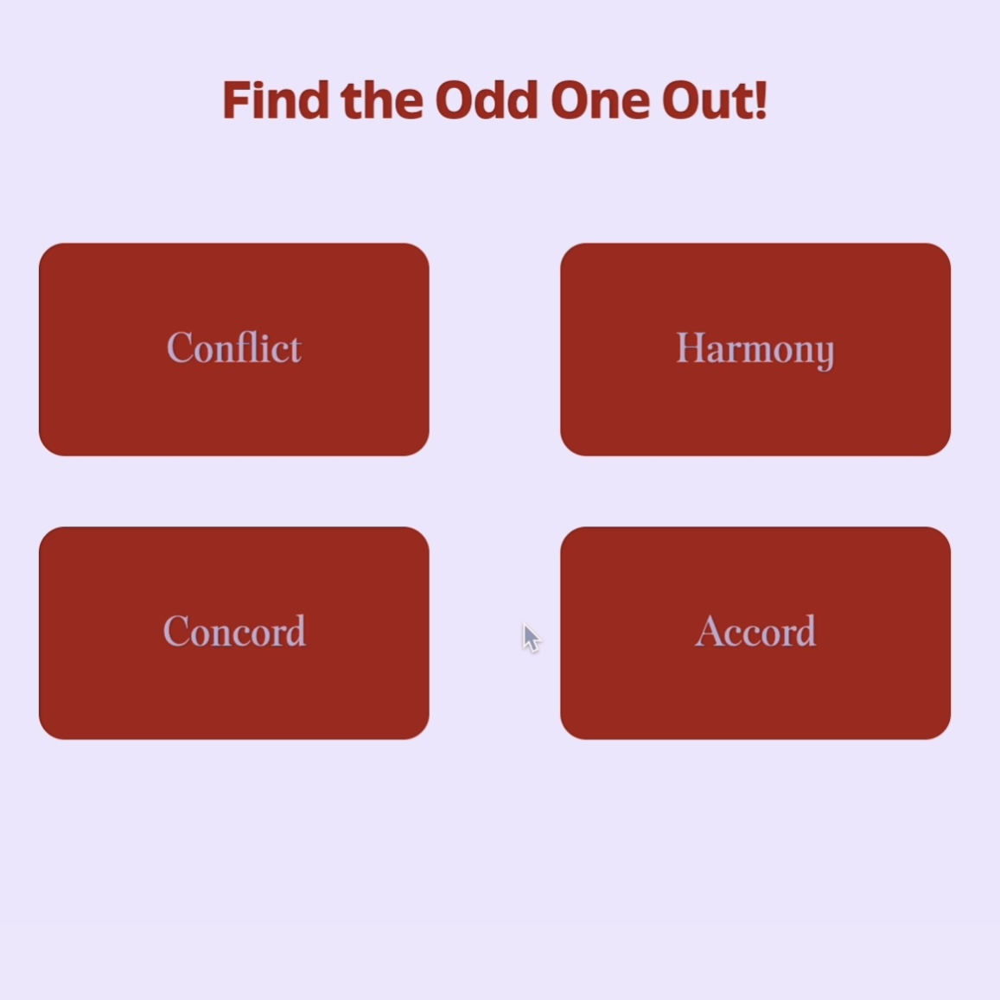
AI-generated word groups
Four words, one odd fellow, new every round.
Point counter
Keeps track of right answers.
Hover effect
Word boxes react as you choose.
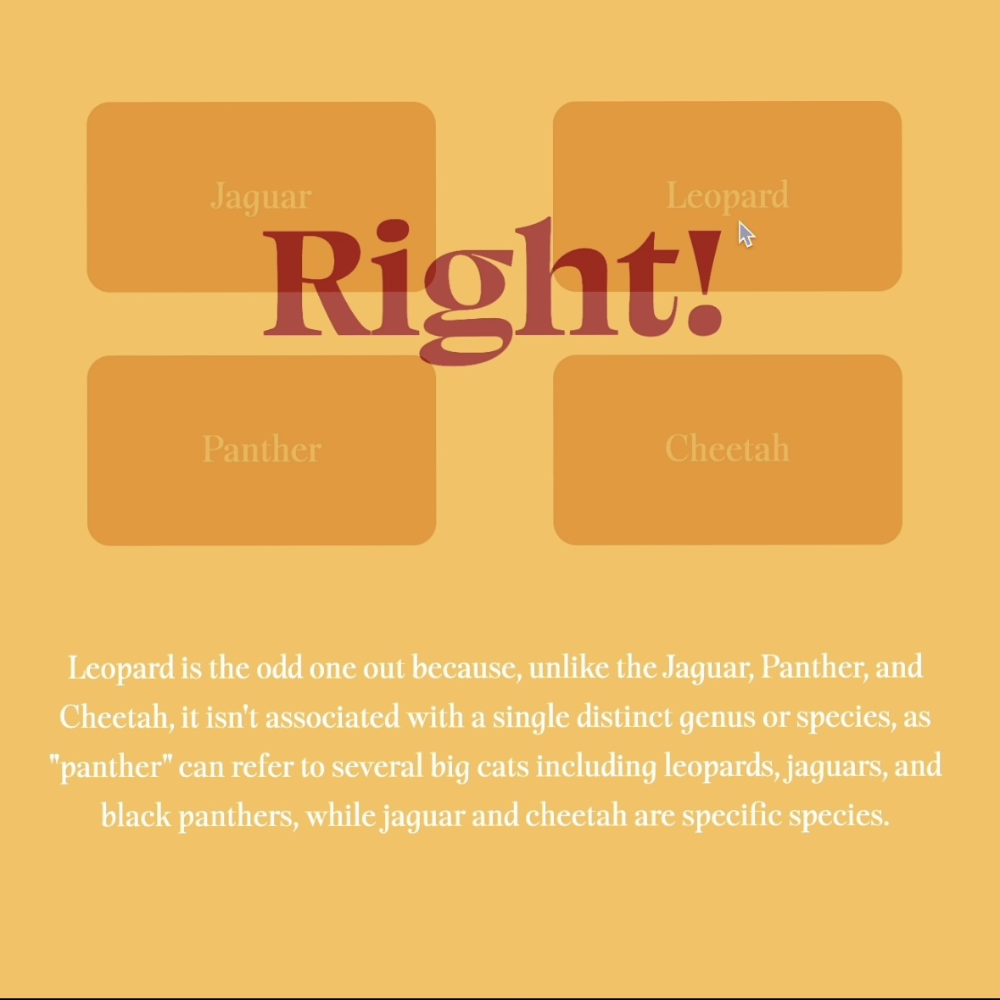
Right or wrong indicator
Instant feedback, with the reasoning.
ProcessFrom a terminal proof of concept to the finished web app, in four phases.
I am interested in brain-teaser and word-based games, and this project explores how large language models can support the creation of these systems. It shows the intentional use of AI as a creative tool in designing generative word-game mechanics.

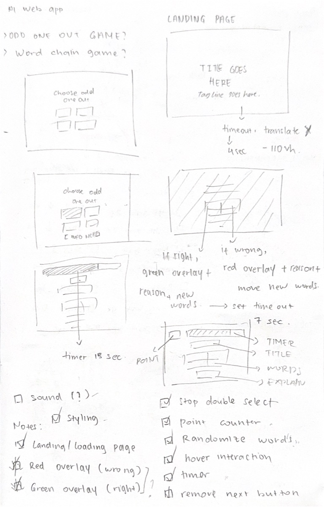

I integrated the OpenAI API to test the viability of the concept. I developed structured prompts to enable consistent, continuous word generation and displayed the results directly within the interface.
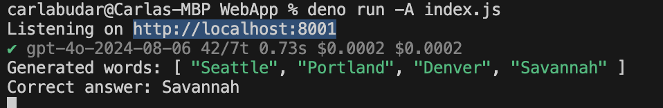
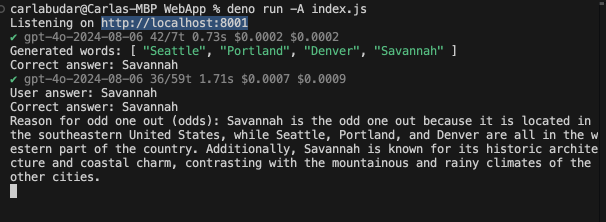
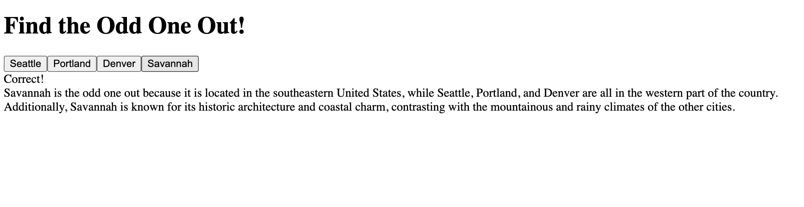
I started building the user interface: simple, streamlined, yet fun to interact with. I was inspired by The New York Times’ game interfaces, which is reflected in the design.
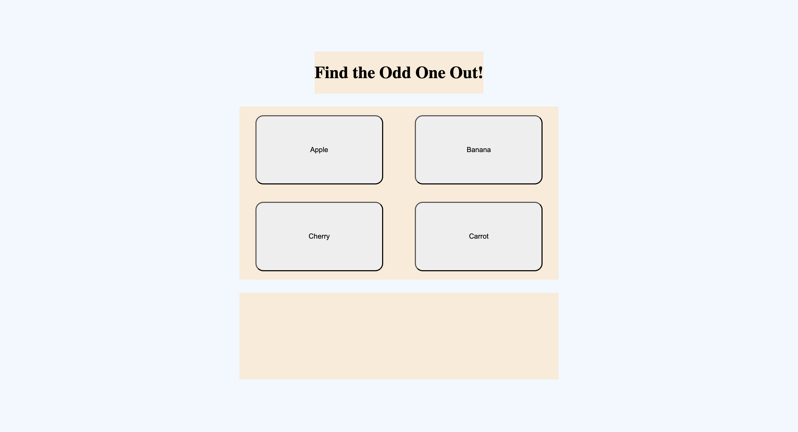
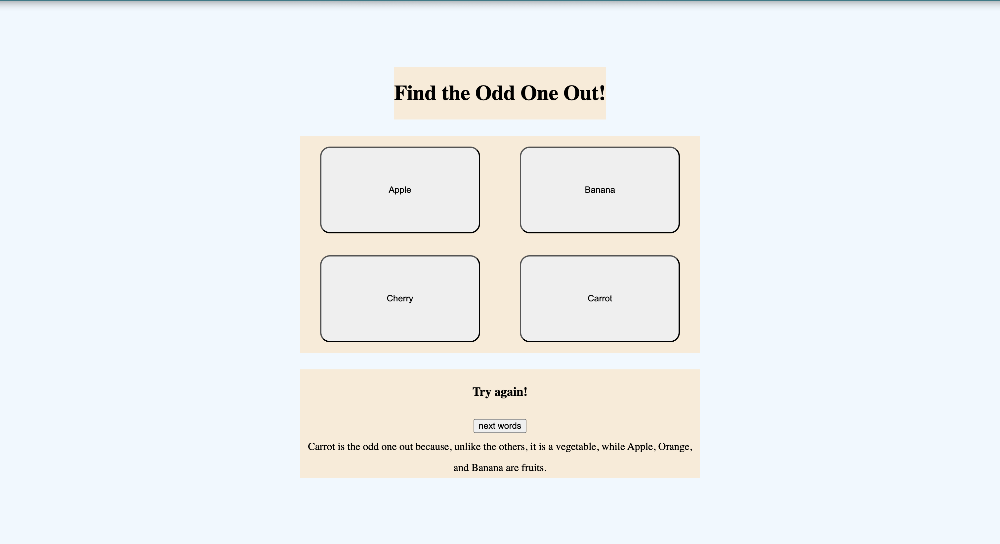
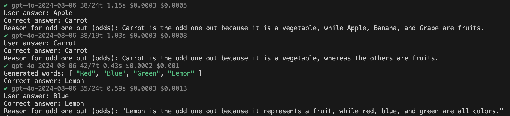
Once the system worked reliably, I designed the interface to be fun and playful, yet not overwhelming, making it accessible to players of all ages.
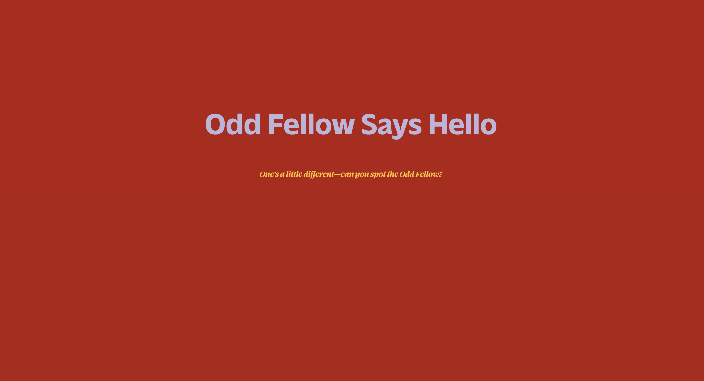
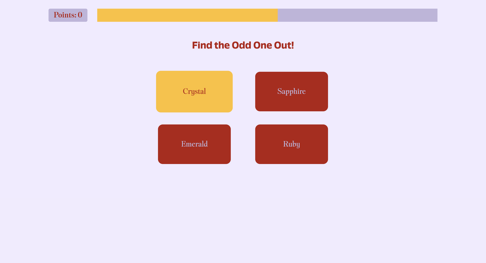
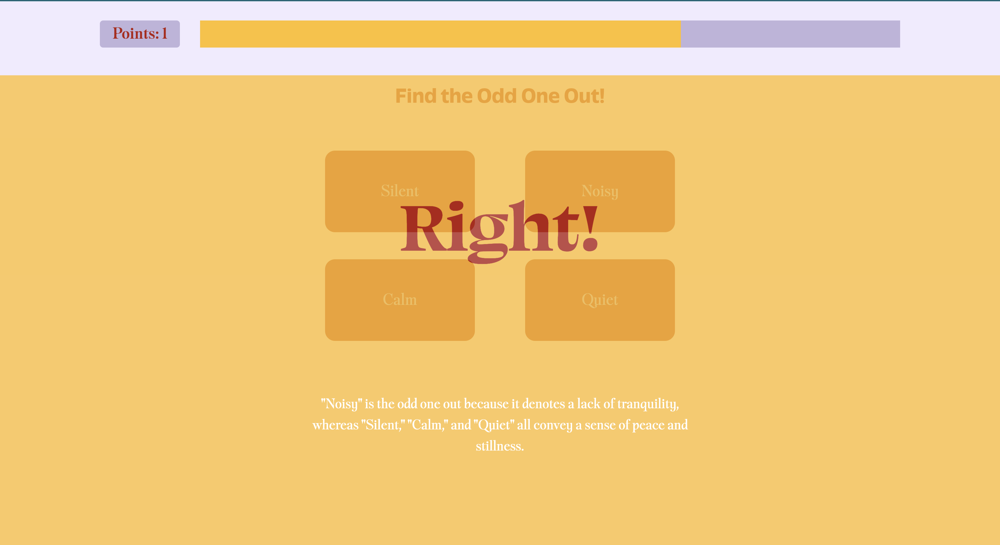
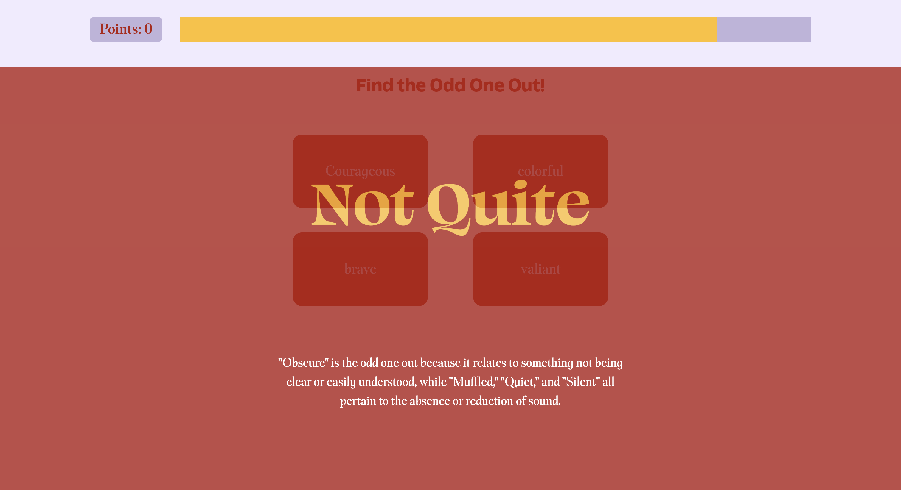
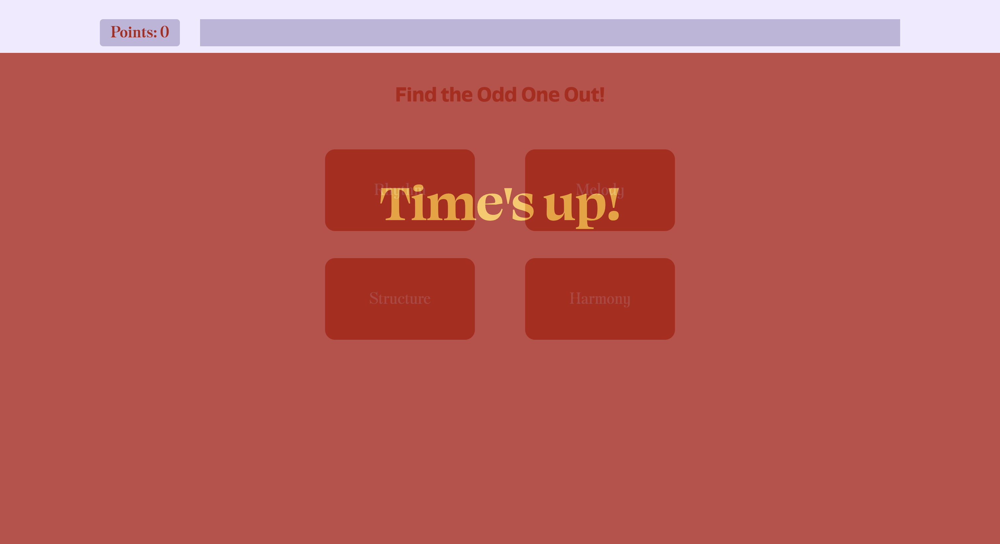
ReflectionWhat building it taught me.
Key learnings
Intentional use of AI
Rather than relying on AI as a “must-have” feature, I treated it as a design material with its own specific and effective use.
Emotion-driven game design
Visual feedback, timers and scoring systems were used deliberately to create tension, reward and momentum, shaping how players feel as they move through each round.
Accessible, all-ages interaction
The interface was streamlined to reduce cognitive load while remaining playful, so the game is approachable for both younger players and adults.
Motion as a design tool
Animations and hover states were integrated not just for decoration, but to guide attention, reinforce feedback and increase engagement.
Iterative prototyping with AI systems
Continuous testing and prompt refinement were essential to achieving believable word groupings and keeping the game logic fair.
Educational feedback through play
Incorrect answers trigger explanatory overlays, turning mistakes into learning opportunities and reinforcing vocabulary through gameplay.